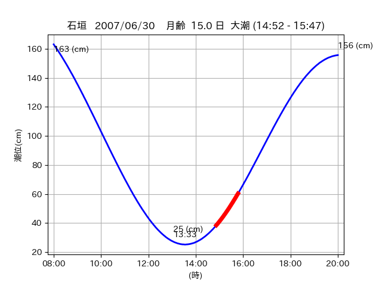

<!DOCTYPE html>
<html>
<head>
    
    <meta http-equiv="content-type" content="text/html; charset=UTF-8" />
    
        <script>
            L_NO_TOUCH = false;
            L_DISABLE_3D = false;
        </script>
    
    <style>html, body {width: 100%;height: 100%;margin: 0;padding: 0;}</style>
    <style>#map {position:absolute;top:0;bottom:0;right:0;left:0;}</style>
    <script src="https://cdn.jsdelivr.net/npm/leaflet@1.9.3/dist/leaflet.js"></script>
    <script src="https://code.jquery.com/jquery-3.7.1.min.js"></script>
    <script src="https://cdn.jsdelivr.net/npm/bootstrap@5.2.2/dist/js/bootstrap.bundle.min.js"></script>
    <script src="https://cdnjs.cloudflare.com/ajax/libs/Leaflet.awesome-markers/2.0.2/leaflet.awesome-markers.js"></script>
    <link rel="stylesheet" href="https://cdn.jsdelivr.net/npm/leaflet@1.9.3/dist/leaflet.css"/>
    <link rel="stylesheet" href="https://cdn.jsdelivr.net/npm/bootstrap@5.2.2/dist/css/bootstrap.min.css"/>
    <link rel="stylesheet" href="https://netdna.bootstrapcdn.com/bootstrap/3.0.0/css/bootstrap-glyphicons.css"/>
    <link rel="stylesheet" href="https://cdn.jsdelivr.net/npm/@fortawesome/fontawesome-free@6.2.0/css/all.min.css"/>
    <link rel="stylesheet" href="https://cdnjs.cloudflare.com/ajax/libs/Leaflet.awesome-markers/2.0.2/leaflet.awesome-markers.css"/>
    <link rel="stylesheet" href="https://cdn.jsdelivr.net/gh/python-visualization/folium/folium/templates/leaflet.awesome.rotate.min.css"/>
    
            <meta name="viewport" content="width=device-width,
                initial-scale=1.0, maximum-scale=1.0, user-scalable=no" />
            <style>
                #map_a6ecbd5757fa3052d14394e8dd15ab6c {
                    position: relative;
                    width: 2048.0px;
                    height: 1600.0px;
                    left: 0.0%;
                    top: 0.0%;
                }
                .leaflet-container { font-size: 1rem; }
            </style>
        
</head>
<body>
    
    
            <div class="folium-map" id="map_a6ecbd5757fa3052d14394e8dd15ab6c" ></div>
        
</body>
<script>
    
    
            var map_a6ecbd5757fa3052d14394e8dd15ab6c = L.map(
                "map_a6ecbd5757fa3052d14394e8dd15ab6c",
                {
                    center: [24.072, 123.794],
                    crs: L.CRS.EPSG3857,
                    ...{
  "zoom": 12,
  "zoomControl": true,
  "preferCanvas": false,
}

                }
            );

            

        
    
            var tile_layer_6d9c63d54c88ceda449bbada8ab7bb9c = L.tileLayer(
                "https://cyberjapandata.gsi.go.jp/xyz/seamlessphoto/{z}/{x}/{y}.jpg",
                {
  "minZoom": 0,
  "maxZoom": 18,
  "maxNativeZoom": 18,
  "noWrap": false,
  "attribution": "\u5730\u7406\u9662\u5730\u56f3",
  "subdomains": "abc",
  "detectRetina": false,
  "tms": false,
  "opacity": 1,
}

            );
        
    
            tile_layer_6d9c63d54c88ceda449bbada8ab7bb9c.addTo(map_a6ecbd5757fa3052d14394e8dd15ab6c);
        
    
            var marker_ab3ad941d65b7702a98105d5fb0f37cc = L.marker(
                [24.0726, 123.7523],
                {
}
            ).addTo(map_a6ecbd5757fa3052d14394e8dd15ab6c);
        
    
            var icon_8c73d4f06d300f72755e3517274dd184 = L.AwesomeMarkers.icon(
                {
  "markerColor": "blue",
  "iconColor": "white",
  "icon": "info-sign",
  "prefix": "glyphicon",
  "extraClasses": "fa-rotate-0",
}
            );
        
    
        var popup_2afcba348e492c2cefe081befc3cc187 = L.popup({
  "maxWidth": "100%",
});

        
            
                var html_23ae15eac5695f164941db31eaac889a = $(`<div id="html_23ae15eac5695f164941db31eaac889a" style="width: 100.0%; height: 100.0%;"><table><tr><td></td></tr><tr><td><center>20070630 No.1 </center></table></td></tr></table</div>`)[0];
                popup_2afcba348e492c2cefe081befc3cc187.setContent(html_23ae15eac5695f164941db31eaac889a);
            
        

        marker_ab3ad941d65b7702a98105d5fb0f37cc.bindPopup(popup_2afcba348e492c2cefe081befc3cc187)
        ;

        
    
    
                marker_ab3ad941d65b7702a98105d5fb0f37cc.setIcon(icon_8c73d4f06d300f72755e3517274dd184);
            
    
            var marker_69046d5041e5ace4f8a280d183731010 = L.marker(
                [24.0745, 123.7841],
                {
}
            ).addTo(map_a6ecbd5757fa3052d14394e8dd15ab6c);
        
    
            var icon_3bf42f88435975e0b7fe4575ad3099d9 = L.AwesomeMarkers.icon(
                {
  "markerColor": "orange",
  "iconColor": "white",
  "icon": "info-sign",
  "prefix": "glyphicon",
  "extraClasses": "fa-rotate-0",
}
            );
        
    
        var popup_de649f48c0ddbacb1f412236cf63146d = L.popup({
  "maxWidth": "100%",
});

        
            
                var html_a75ce9488132e16ad0e30ce9b3120610 = $(`<div id="html_a75ce9488132e16ad0e30ce9b3120610" style="width: 100.0%; height: 100.0%;"><table><tr><td></td></tr><tr><td><center>20070630 No.2 </center></table></td></tr></table</div>`)[0];
                popup_de649f48c0ddbacb1f412236cf63146d.setContent(html_a75ce9488132e16ad0e30ce9b3120610);
            
        

        marker_69046d5041e5ace4f8a280d183731010.bindPopup(popup_de649f48c0ddbacb1f412236cf63146d)
        ;

        
    
    
                marker_69046d5041e5ace4f8a280d183731010.setIcon(icon_3bf42f88435975e0b7fe4575ad3099d9);
            
    
            var poly_line_25fe8471b0161e9d89ed2a2ac7b11cfa = L.polyline(
                [[24.0745, 123.7841], [24.0728, 123.7928]],
                {"bubblingMouseEvents": true, "color": "#00FFFF", "dashArray": null, "dashOffset": null, "fill": false, "fillColor": "#00FFFF", "fillOpacity": 0.2, "fillRule": "evenodd", "lineCap": "round", "lineJoin": "round", "noClip": false, "opacity": 1.0, "smoothFactor": 1.0, "stroke": true, "weight": 3}
            ).addTo(map_a6ecbd5757fa3052d14394e8dd15ab6c);
        
    
            var marker_2eba240cf6958f3dd9530e409881f1f2 = L.marker(
                [24.0729, 123.7912],
                {
}
            ).addTo(map_a6ecbd5757fa3052d14394e8dd15ab6c);
        
    
            var icon_220aa39a7d98d422d734e3dae5fddaf3 = L.AwesomeMarkers.icon(
                {
  "markerColor": "orange",
  "iconColor": "white",
  "icon": "info-sign",
  "prefix": "glyphicon",
  "extraClasses": "fa-rotate-0",
}
            );
        
    
        var popup_ac1cca97dbeae6427d450df228b4c848 = L.popup({
  "maxWidth": "100%",
});

        
            
                var html_2a772f7aba8d696ea0f5eaa9f14c35bd = $(`<div id="html_2a772f7aba8d696ea0f5eaa9f14c35bd" style="width: 100.0%; height: 100.0%;"><table><tr><td></td></tr><tr><td><center>20070630 No.3 </center></table></td></tr></table</div>`)[0];
                popup_ac1cca97dbeae6427d450df228b4c848.setContent(html_2a772f7aba8d696ea0f5eaa9f14c35bd);
            
        

        marker_2eba240cf6958f3dd9530e409881f1f2.bindPopup(popup_ac1cca97dbeae6427d450df228b4c848)
        ;

        
    
    
                marker_2eba240cf6958f3dd9530e409881f1f2.setIcon(icon_220aa39a7d98d422d734e3dae5fddaf3);
            
    
            var poly_line_c0801a37a799679fc454b6c1b4dab443 = L.polyline(
                [[24.0729, 123.7912], [24.0711, 123.7965]],
                {"bubblingMouseEvents": true, "color": "#00FFFF", "dashArray": null, "dashOffset": null, "fill": false, "fillColor": "#00FFFF", "fillOpacity": 0.2, "fillRule": "evenodd", "lineCap": "round", "lineJoin": "round", "noClip": false, "opacity": 1.0, "smoothFactor": 1.0, "stroke": true, "weight": 3}
            ).addTo(map_a6ecbd5757fa3052d14394e8dd15ab6c);
        
</script>
</html>